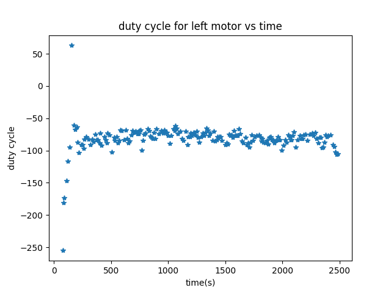

Lab 9
In Lab 9, I used angular speed control to map the controlled space in the lab in order to allow future localization for the robot.
Angular Speed Control
PreProcessing
First I had to low pass my gyroscope values. I did this the same way as in Lab 4.
In lab 4 my accelerometer already had a low pass filter on it, so I assume from this fft, my gyroscope already has a low pass filter as well.
I ran into a problem though. As I did differential control on my PID controller, the robot struggled tremendously. I realized that this must be due to noise in the gyroscope only present when turning. Because this was obviously motor noise, I used the same alpha value from lab 4 to get a cuttoff frequency of about 15Hz thus fixing the controller.
PID Control
In order to do PID control on the angular velocity, I modified my Lab 6 code to assign the PID value to both motors individually in order to turn the robot, though the duty_cycle of the left motor is the same as the right motor as my correction factor fixes any inequalities.
Here is the PID control code
int16_t duty_cycle_last = 0;
void doPID_IMU(float current_pos, int16_t desired_pos, int16_t *motorBuff, int16_t *motor2Buff, int cnt)
{
if(cnt == 0)
duty_cycle_last = 0;
if (current_pos == -1)
current_pos = 0;
int16_t error = current_pos - desired_pos;
error_accumulation += error;
if (error_accumulation > Imax)
error_accumulation = Imax;
if (error_accumulation < (-Imax))
error_accumulation = -Imax;
int16_t error_deriv = error - prev_error;
int16_t duty1 = Kp * error;
int16_t duty2 = Ki * error_accumulation;
int16_t duty3 = Kd * error_deriv;
int16_t duty_cycle = duty1 + duty2 + duty3;
prev_error = error;
//duty_cycle = duty_cycle_last + duty_cycle;
//duty_cycle_last = duty_cycle;
if (duty_cycle <= -1)
duty_cycle -= min_threshold;
else if (duty_cycle >= 1)
duty_cycle += min_threshold;
if (duty_cycle > 255)
duty_cycle = 255;
if (duty_cycle < -255)
duty_cycle = -255;
int16_t duty_cycle_1 = duty_cycle;
int16_t duty_cycle_2 = -duty_cycle;
change_speed((int)duty_cycle_1, (int)duty_cycle_2);
motorBuff[cnt] = duty_cycle_1;
motor2Buff[cnt] = duty_cycle_2;
}
By doing this, I could the same PID code from Lab 6 except for also sending my motor 2 values as well. By using the heuristic approach from Lab 6, I was able to acheive a successful angular speed control at 80 (rad/s)shown in this video.
With this data

As can be seen, due to the inconsistency of the motors and the tires even with tape on, the car moves slightly. This strongly depends on both the orientation of the motors, battery level, and correction factor given.
Mapping
Sending IMU and TOF data
In order to do mapping, I had to send both my IMU values and my TOF values in order to calculate angles. To do this, I modified my lab6 code to do this,
if (myICM.dataReady())
{
if (vl53_1.dataReady() && vl53_2.dataReady())
{
Serial.println("collecting distance");
timeDBuff[cnt_d] = time - currTime;
getDistance(&vl53_1, &(dist1Buff[cnt_d]));
getDistance(&vl53_2, &(dist2Buff[cnt_d]));
cnt_d++;
}
timeIBuff[cnt_i] = time - currTime;
Serial.println("collecting imu");
setAGMT(&myICM);
zBuff[cnt_i] = z_g;
doPID_IMU(zBuff[cnt_i], (int16_t)fun_arg, motorBuff, motor2Buff, cnt_i);
cnt_i++;
}
With this code modification, I could tell the robot to spin for a given time with the stunt command from Lab 8. I could then collect TOF data and IMU data at once while spinning at a controlled speed.
Converting polar to rectangular
To make the maps, I ran the stunts at 4 marked positions on the arena like this 270 degree run.
One problem with my spins was the inconsistency of the rotation. The rotation would always get slightly off axis unless I specifically fine tuned my correction factor for my motors. This desired factor changed almost every run as no two runs would undergo the same friction, so to get a full 360 degree turn, the robot would always get slightly off axis. I opted to do multiple partial revolution runs and merge them with a full 360 run at a higher speed in order to see which modifications to make.
To convert the distance values to rectangular coordinates, I used transformation matrices. For the robot transformation matrix, It was a rotation about the angle of the robot and an offset of whatever point I was measuring at (like (5,3)). For the transformation from the robot to the first TOF sensor, since TOF1 was in front, it was no rotation and 7cm in the y direction. TOF2 was a rotation of \(-90^\circ\) and an offset of 3cm in the x direction. To get the current angle, I simply used np.trapz to integrate the IMU velocity value from time 0 to the distance measurement time in order find its angular position and thus the angle. After doing this, I could convert polar graphs like this,
_polar.png)
To these
.png)
.png)
.png)
.png)
Another thing to consider was how similar different runs were. Some runs would get significantly more data points like this
_before.png)
_after.png)
The angle of the measurements stayed surprisingly consistent, but the distances recorded would vary wildly from run to run.
Final Map
Putting these all together, I got this
Something is wrong here, the lines don’t match up. The way I fixed this was by rotating each graph by \(frac{\pi}{10}\). This seemed to have fixed the problem. I assume this offset comes from the inconsistent angular speed at the initial PID control of the robot. With this fix, the full map is shown

Drawing lines where the walls should be yields this picture
As can be seen, in areas like (5,3), the off axis rotation caused problems with the right wall as the distance read by sensor 2 a quarter rotation before had a wildly different value from sensor 1. The top of the box in the bottom of the arena was also not read well due to the inconsistency of the TOF sensor at long distances.